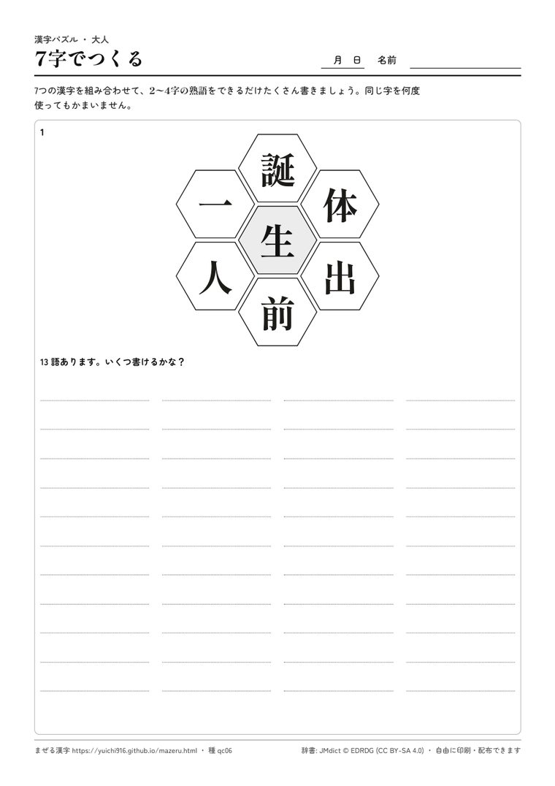

無料・答え付き・A4
漢字パズルのプリントを、答え付きで何枚でも
介護施設のレクリエーション、授業のすきま時間、家庭学習に。熟語の穴うめ「和同開珎（わどうかいちん）」と「7字でつくる」を、小学1〜6年の学年別やむずかしさ・問題数・文字の大きさを選んでその場で作れます。1枚目が問題、2枚目が答え。
小学1〜6年の学年別登録なし印刷して自由に配布大きい文字も選べる答えは1つに決まる問題だけ
プリントをつくるブラウザで選んで、そのまま印刷

使う場面から選ぶ
高齢の方の脳トレに和同開珎・小学校の字・大きい文字・6問つくる →
小学生の授業・宿題に和同開珎・小学低学年の字だけ（学年別は下から）つくる →
中学生の腕だめしに和同開珎・中学で習う常用漢字までつくる →
みんなで数を競うなら7字でつくる・熟語をいくつ書けるかつくる →
学年から選ぶ（小学校）
□に入る答えがその学年で習う字になる和同開珎です。まわりの字と熟語も、その学年までに習う字だけ。学年は学年別漢字配当表（2020年度から）に合わせています。
使い方
- 選ぶ形式・学年やむずかしさ・問題数・文字の大きさを選びます。気に入らなければ「別の問題にする」。
- 印刷する「印刷する」ボタンで、問題と答えの2枚が A4 で出ます。
- 配る施設・学校・家庭で、自由にコピーして配ってかまいません。ページのアドレスを保存すれば、同じプリントをもう一度出せます。
2つの形式

和同開珎（わどうかいちん）
真ん中の□に漢字を1字入れて、上下左右の字と4つの熟語をつくる穴うめです。たとえば 真・今・至・季 なら「夏」（真夏・今夏・夏至・夏季）。辞書の中でほかの字では4つの熟語がそろわないことを確かめた、答えが1つに決まる問題だけを出します。

7字でつくる
7つの漢字を組み合わせて、熟語をいくつ書けるかに挑みます。同じ字は何度使ってもかまいません。答えのページには、辞書にあるよく使う熟語を読みつきでのせています（ほかの熟語も、辞書にあれば正解にできます）。グループで数を競うレクにも向いています。
ご感想・ご要望
使ってみた感想や、ほしい形式・不具合は、下の「作者にひとこと」から届けてください（作者だけが読みます。返事はしていません）。
よくある質問
- お金はかかりますか？
- かかりません。登録もいりません。
- 施設や学校で配ってもいいですか？
- はい。印刷・コピーして自由に配ってください。紙の下に出典（辞書 JMdict）とページのアドレスが入ります。
- 答えはどの辞書で決めていますか？
- 電子辞書 JMdict（© EDRDG、CC BY-SA 4.0）の、新聞や教育でよく使われる印の付いた熟語です。下品な語や配慮が必要な語は入れていません。小・中学生向けのプリントでは、死・犯罪・病気などの重い語も答えに出しません。
- 学年はどう決めていますか？
- 文部科学省の学年別漢字配当表（2020年度からの1,026字）に合わせています。「3年」を選ぶと、□の答えは3年生で習う字、まわりの字は1〜3年生で習う字になります。7字でつくるは、その学年までに習う字で盤を作ります。